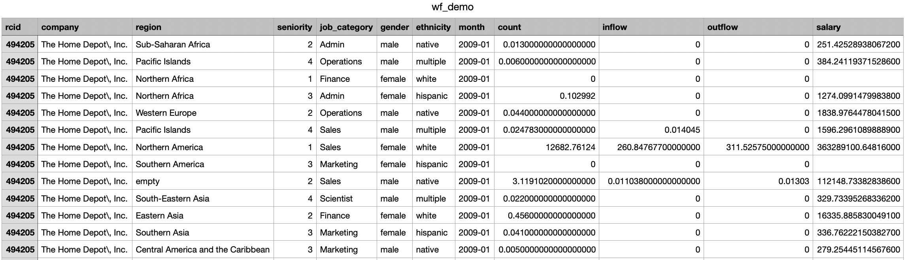
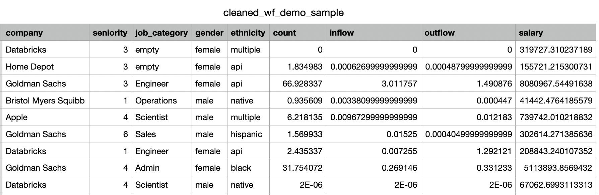
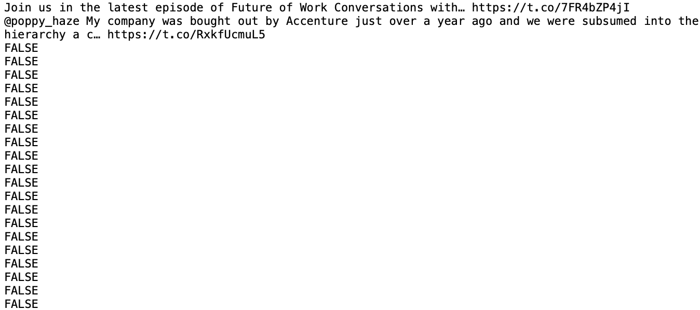
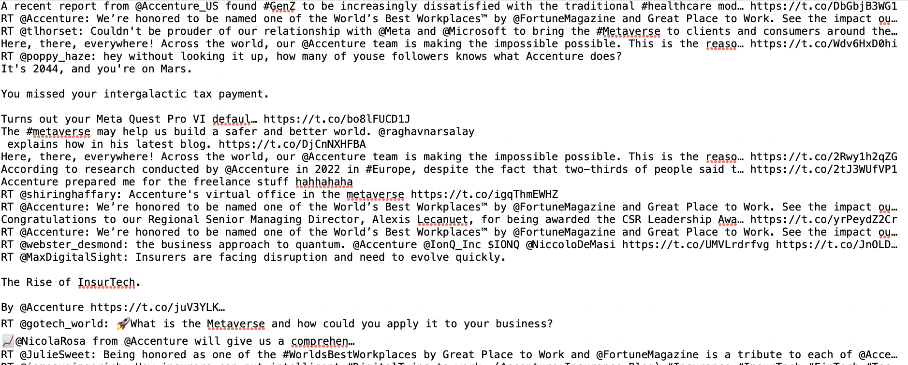
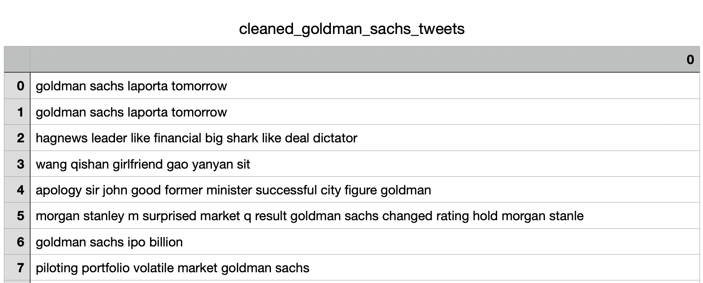

Data Cleaning I cleaned both my record workforce dynamics data as well as my Tweets data.
Cleaning Record Workforce Dynamics Data in R (link to code)I used R to clean one of the three record datasets from Revelio Labs, "wf_dynam_demo_breakdown.csv". I only cleaned this dataset because the other two datasets are unnecessary for my analysis down the road, as this is the only dataset with demographic data (gender and ethnicity). As mentioned in the data tab, the raw workforce dynamics datasets cannot be uploaded to GitHub or GU Domains due to their large size. Instead, you can download the raw workforce dynamics dataset from Revelio Labs via AWS (link) I mainly worked column-by-column to clean the data. First, I removed the rcid column becauase we do not need company id for only six companies. Second, I removed the ', Inc.' and '\\' substrings in the company column values. Then, I renamed some of the company names for better readability and consistency. For the region column, I filled empty values with 'NA' so that they are more easily retrievable. For the year column, I changed the 'month' column to show only the year since I am not interested in the month-by-month granularity. Because the data is so large, I subsetted the data to data where year is 2020 and region is Northern America. I also think subsetting would yield interesting and relevant workfroce insights since the pandemic started in 2020 and we are based in Northern America. After subsetting, I removed the year and region columns since they are all the same (2020 and Northern America). Then, I moved onto to checking and imputing NA values in the data. I first checked which columns have NAs. I confirmed that 'salary' is the only column with NA values--which makes sense since this data is especially difficult to obtain. Then, I used ddply from the plyr library to impute NA values in the salary column to the median salary of employees belonging in the same ethnicity. I chose to impute with the median because medians mitigate the effects of outliers, whereas means take outliers into account. I chose to use the medians of ethnicity specifically because it is one of only two categorical demographic variables in the data, which means it has more variation compared to gender, for which there are only two values. If I had more time, I would like to investigate further the relationships between ethnicity, gender and salary before deciding on imputing NAs with medians of the corresponding ethnicity. Because if there are no solid relationships, then I might remove the NAs instead. While the cleaned data is still a lot smaller in size than the raw data, it is still too large to upload onto GitHub. Hence, I created a sample of the cleaned data available on GitHub (sample data here). For reference, this is a snapshot of the raw workforce demographics data:  This what the cleaned record data looks like:  Cleaning Tweets Text Data in Python (link to code)I used Python to clean the Tweets data. Before I started any cleaning, I imported necessary libraries such as nltk, CountVectorizer from sklearn.feature_extraction.text, stopwords from nltk.corpus and word_tokenize from nltk.tokenize. Then, I read the five Tweets text files into corpa. The first step consisted of splitting the files' text into individual lines, where each tweet was its own line, using the splitlines() function. Then I convereted each corpus to a dataframe. I looked at the text files further to see how to clean them further, and realize that each text file had a long list of lines that are obviously not Tweets, and the non-Tweet text occurs after the first occurrence of 'FALSE' in each text file. The screenshot below shows an example of where the long list of non-Tweets starts.  Therefore, I used the index of the first occurrence of 'FALSE' to subset the dataframes and only include the Tweets. Afterwards, I created a clean_tweets() function to make all letters lowercase and remove stopwords like symbols, numbers, and links. I also added stopwords like "href" and "rt". I ran a for loop to filter out the stopwords. Then, I used the WordNetLemmatizer() function to lemmatize all words and join them back together. I applied this function to all of my dataframes. After cleaning the Tweets, I ran the CountVectorizer() function to generate a matrix where columns are words and rows are Tweets. I also printed the vocabulary to explore object attributes. Finally, I saved the finalized Tweets onto their own files in the data folder of my GitHub repository here. For reference, this is a snapshot of the raw text data:  This what the cleaned text data looks like:  |